The following details the entire story of The Lost Mine of Phandelver as scribed by the High Wizard of Neverwinter. It consists of three parts, the prologue which the reader must understand as that sets the stage for all the events to come next, the events of the Lost Mine in the year 1491 D.R. (For those unfamiliar, D.R. stands for Dale Reckoning, the year when the great standing stone was raised by my people, the Cormanthyr elves, in the northern Dalelands.), as well as an epilogue and an account of the many plots and intrigues to come. Years are mentioned in most of the prologue, and all the names of various characters are taken from historical annexes. The prologue mainly plays out as a set of years and corresponding events, and the epilogue as a brief glimpse of things to come, the main expedition details the adventures of Rev. Flint Rockseeker, Lady Iris Vicaria, Magus Quarion And-vang, Miss Seraphina Thumbleton and two warriors simply called Hammer and Robin that led to the discovery of the Mine.
A Sword Coast chronicle · January 2026
The Lost Mine
A mine lost to time. A company bound by adventure. A story worth keeping.
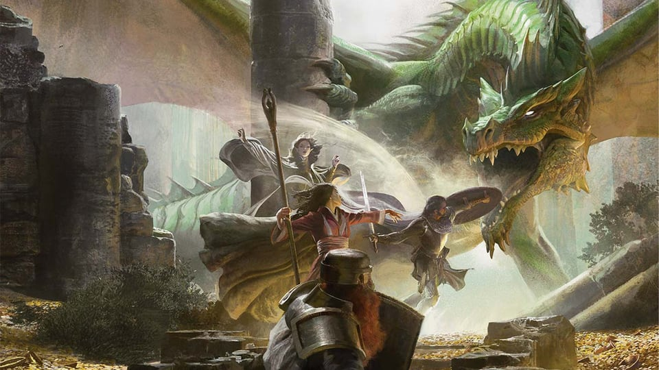
A Tale on the Sword Coast
I · Before the company
Part I: Prologue
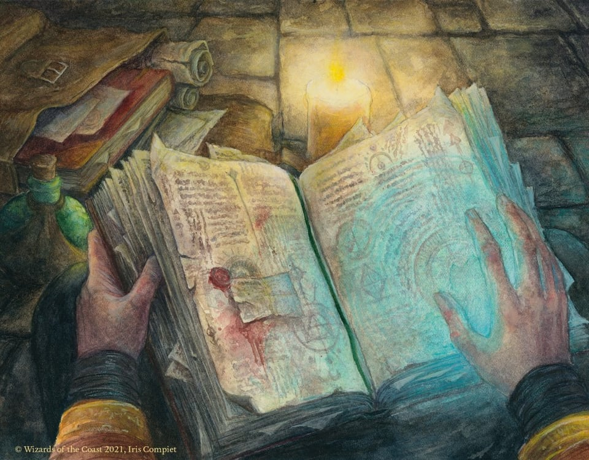
Year 637 D.R.
The Vision of Prince Maenoth
The story begins in the Kingdom of Phanorm, the Empire of Three Crowns. Prince Maenoth Kervellen, an elf of the royal bloodline and a powerful wizard in his own right, receives a vision from Oghma of a great power residing in the Sword Mountains. Following this revelation, the prince departs for the Neverwinter Woods with his protector Ser Alaric Tressendar and a large retainer of farmers, merchants, and workers.
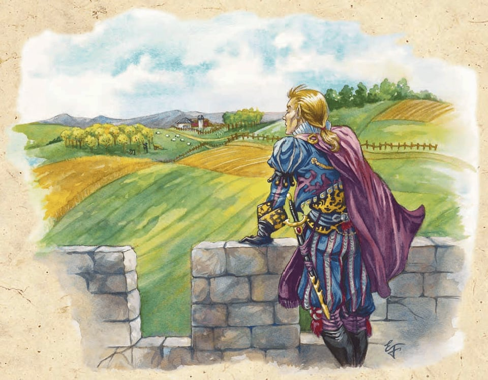
Year 638 D.R.
Castle Cragmaw and Phandelver Founded
Prince Maenoth lays the foundation for Castle Cragmaw, which in earlier years had simply been known as Castle Crags, along with an altar and shrine to Oghma within it. The workers raise the seven spires of the castle in the architecture of Phanorm. Nearby, Ser Alaric establishes a farming settlement and names it Phandelver, after his old home and his new purpose.
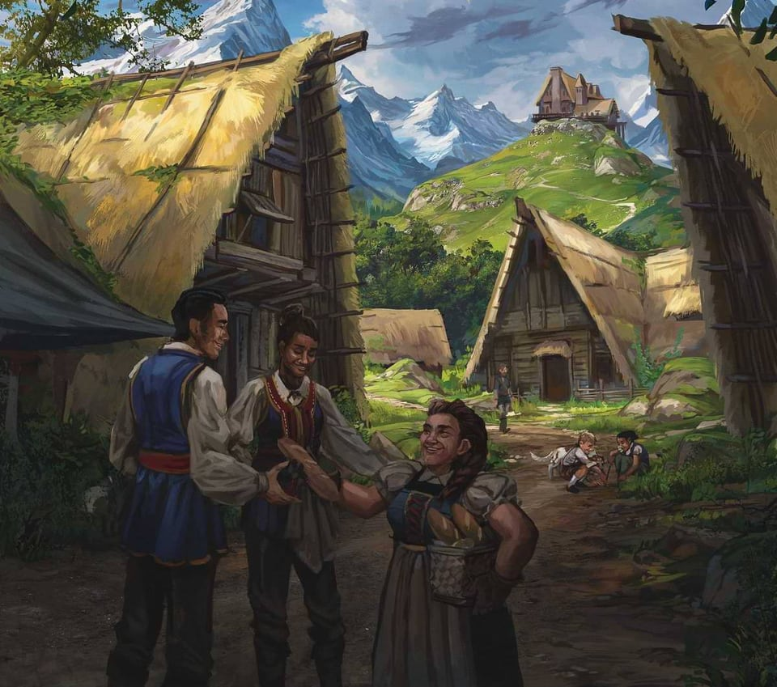
Years 640–650 D.R.
A Bustling Settlement Rises
While the castle is being built, the settlement attracts many settlers and grows into a bustling town. Ser Alaric builds his manor atop a hill and takes up the faith of Tymora. Dwarves and gnomes devoted to Tymora and Oghma join the prince’s cause and aid the search for the lost power nearby. By the end of the decade, the castle stands complete.
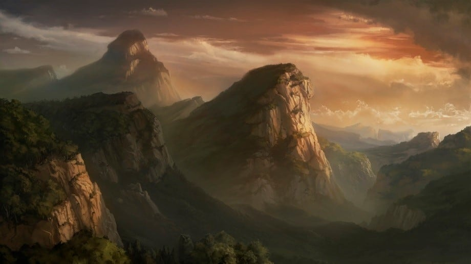
Years 650–700 D.R.
The Search in the Sword Mountains
The dwarves, led by the prince, search tirelessly for the lost power of Oghma. They brave the bitter snow of the Sword Mountains and fend off roving orc bands. Yet darker and more terrible powers are already watching these efforts from afar.
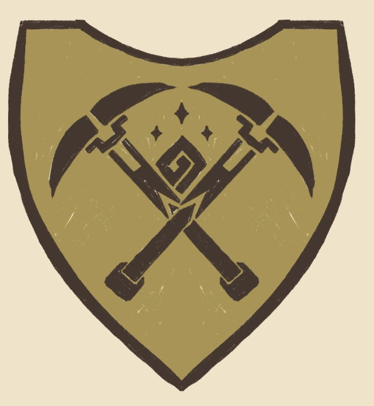
Years 730–790 D.R.
Trade, Towns, and the Forge’s Foundations
Prince Maenoth dies of illness, yet the region prospers as trade along the Triboar Trail expands through Phandelver. Merchant guilds and nearby settlements arise. Thundertree is founded by druids. The noble Vicaria family, owners of precious mines, establishes Corlinn Hill at the foot of Mount Hotenow. The Rockseeker clan takes up prospecting. Meanwhile, dwarves excavate the newly found cavern and gnomish followers of Oghma begin constructing a mechanism that will channel its power into a Forge of Spells.
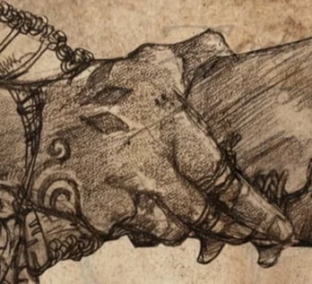
Year 811 D.R.
The Phandelver Pact
The Spell Forge is completed. After long negotiation, dwarves and gnomes agree to work together and form the Phandelver Pact, an alliance with the nearby settlement to share the riches of the mine for the peace and prosperity of all, and to honor the legacy of the late prince and of Ser Alaric, whose descendants now rule Tressendar Manor and Phandalin.
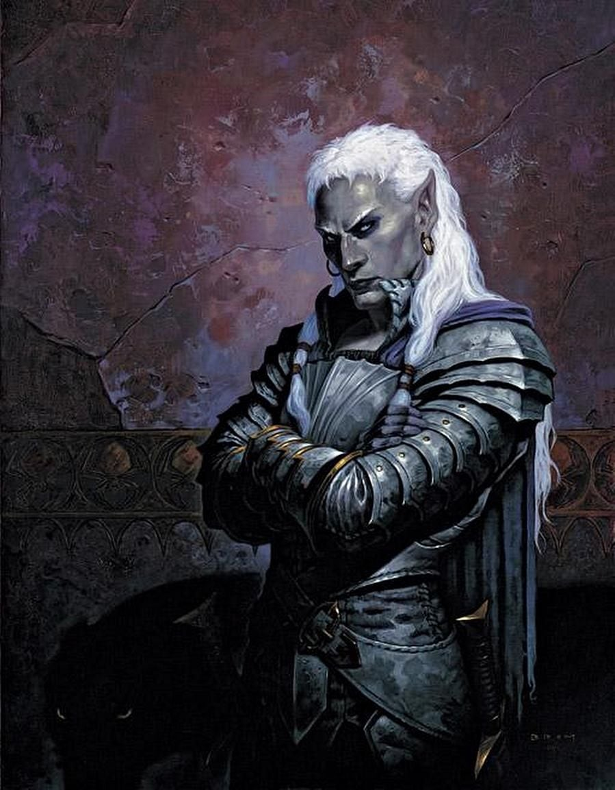
Year Circa 815 D.R.
The Birth of the Black Spider
Beneath the Kryptgaarden Forest, in lost mines, a dark elf named Nezznar is born. In the years that follow he masters arcane magic and, under the influence of his matron deity Lolth, takes the name “The Black Spider.” In time he too will seek a great magical bounty nearby.
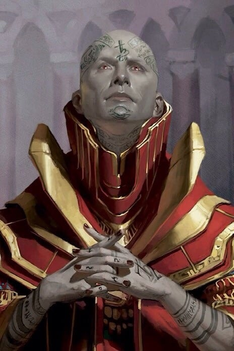
Year Circa 890 D.R.
Dawnbringer and the Thayan Interest
The mine begins to yield great magical wealth. The dwarves establish a temple to Dumathoin, god of mining, within the cave. Human priests of the Morninglord join the forge and offer their smiths in exchange for the creation of a weapon capable of smiting the undead. Thus begins the forging of the Dawnbringer. Rumors of this weapon reach Thay, and Szass Tam assigns the mage Mormesk to investigate.
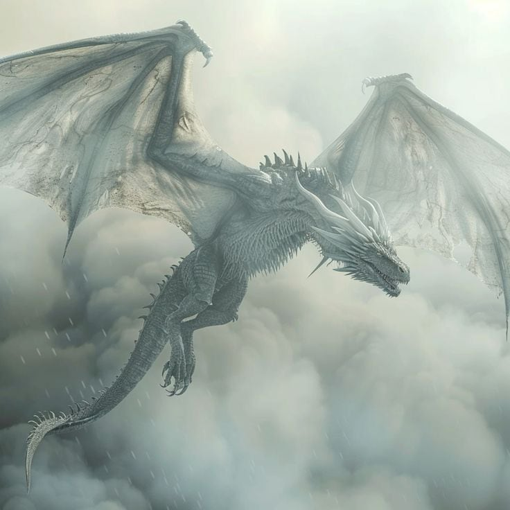
Year 908 D.R.
Wealth Draws Predators
Ice Spire Hold, Thundertree, and Phandelver begin to accumulate enough wealth to attract dangerous attention. It is no longer only orcs that watch the region. Dragons, newly active in the locality, begin to set their sights upon it.
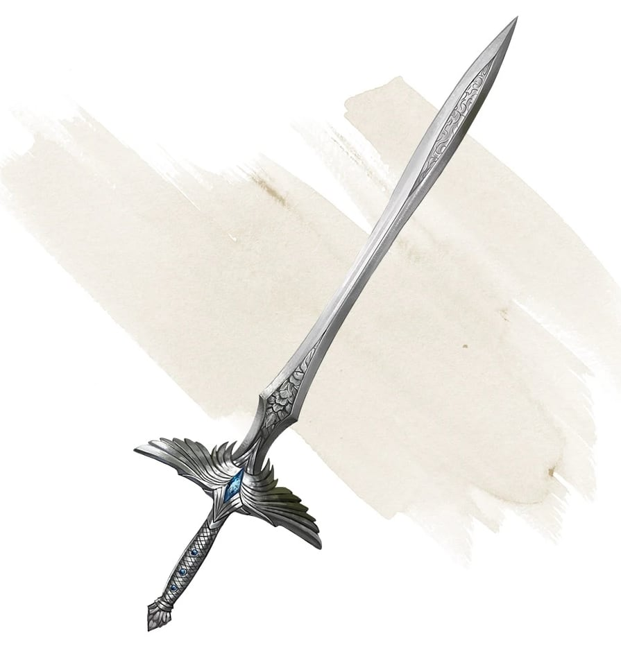
Year 926 D.R.
Talon Given to the Black Hawk
Lady Aldith Tressendar, an elven descendant of Lord Alaric, assumes leadership of Phandelver. As a gift, the gnomes of the mine present her with the greatsword Talon, a fitting weapon for the knight known as the “Black Hawk.”
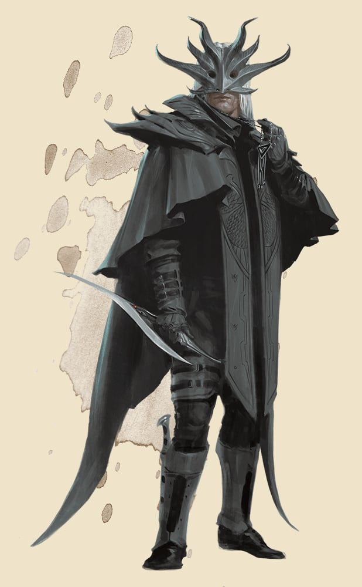
Year 938 D.R.
The Cult Closes In
The Cult of the Dragon grows interested in the region as dragon activity increases. The faction that reveres undead dragons aligns with the necromancers of Thay under Mormesk, who silently makes his way toward the cave in search of an opportunity to strike.
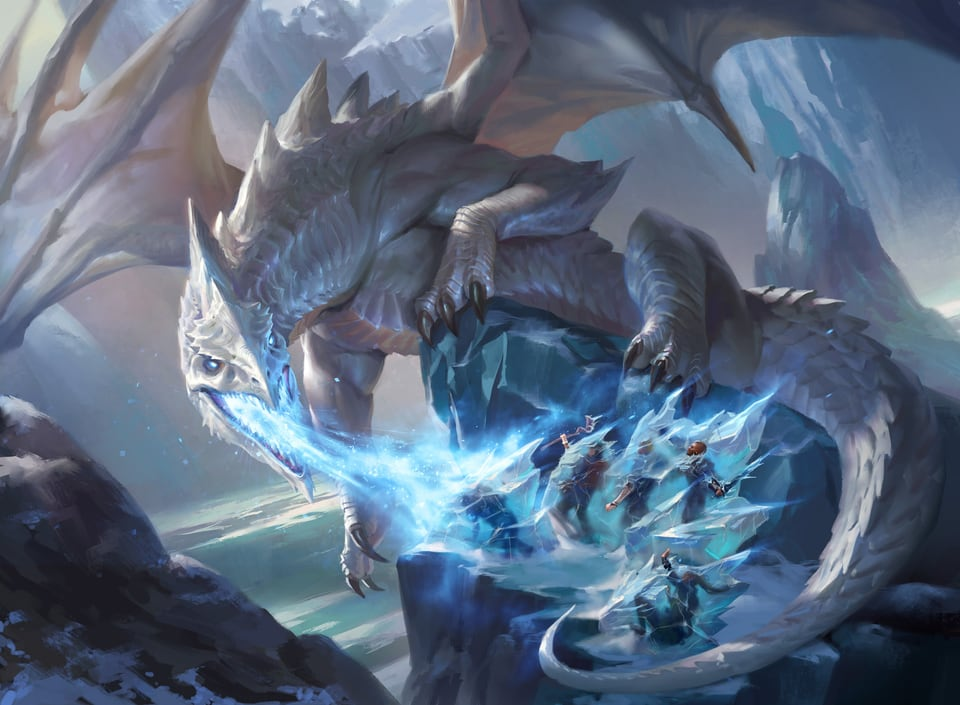
Year 939 D.R.
The Year of Winter’s Wrath
Orcs from the Kryptgaarden Forest, led by the warlord chieftain Kra, launch an all-out assault on Ice Spire Hold, overwhelming its dwarven defenders. At the height of the battle, the white dragon Cryovain descends upon the defenseless fortress. As dwarves perish and orcs are seized by winter madness, the horde sweeps onward into the Sword Mountains and next assails the Phandelver Mine. There Mormesk, with his Red Wizards and dragon cultists, seizes his chance and strikes. The resulting bloodbath collapses the cave and the mine is lost. Trapped within are Mormesk, dwarven and gnomish defenders, and orcish warriors locked in slaughter. The surviving orcs then fall upon Phandelver. Lady Aldith, unable to save the town, makes her last stand at her manor and dies defending the tomb of her parents in the mines beneath it. With her, Talon is lost. The invasion sweeps onward to Castle Crags, which is likewise overrun and later becomes Cragmaw. The town is massacred, the mine and its location are lost to time, and Cryovain earns the title “Winter’s Wrath.” The peaks thereafter are plunged into a cruel and enduring winter.
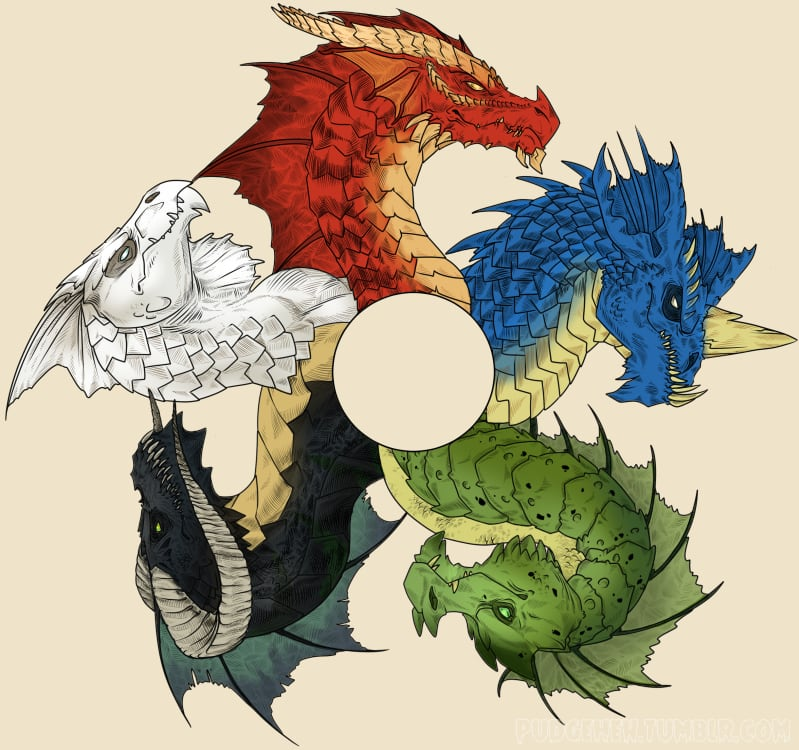
Year 1462 D.R.
The Prophecy Stirs the Dragons
The elements begin to rage as Winter’s Wrath awakens at Ice-Spire Peak. The Cult of the Dragon becomes deeply involved in the region, believing that the unrest is caused by slumbering dragons answering an ancient prophecy: “None shall be left save shattered thrones and the dead, Dragons shall rule the world entire” — or, by another reading, “None shall be left save shattered thrones, and the dead Dragons shall rule the world entire.” Both factions of the cult move into the area. Dragon activity is reported in the Neverwinter Woods, the Ice Spire Mountains, and at the fiery heart of Mount Hotenow. Promising to slay and raise these dragons, Nezznar forms an alliance with the dragon cultists, who agree in turn to help him find and control Wave Echo Cave.
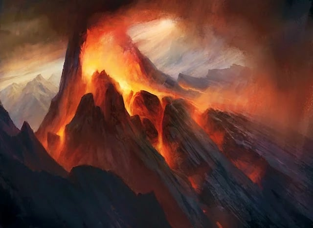
Year 1463 D.R.
Mount Hotenow Erupts
The red dragon beneath Mount Hotenow awakens, causing the volcano to erupt. The disaster destroys the estate of Corlinn Hill, forcing the Vicaria family to flee to Neverwinter. With dragon cult activity increasing, more factions are drawn into the region.
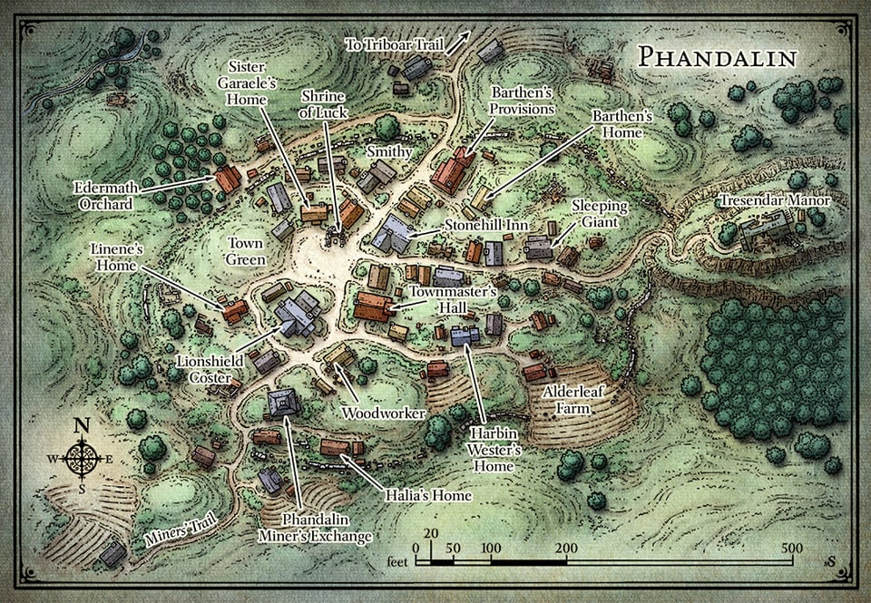
Years 1465–1480 D.R.
Phandalin’s Factions Take Shape
The Order of the Gauntlet is mobilized, and Daran Edermath, a paladin of Bahamut, comes to Phandalin under the guise of a retired knight and farmer. Linene Graywind establishes the Lionshield Coster. As Phandalin grows, its residents uncover the shrine to Tymora built by Ser Alaric Tressendar. The shrine appears in a vision to Sister Garaele, a Harper and devotee of Tymora, who travels to Phandalin, forms her own network, and reconsecrates the shrine. A gang of humans and halflings emerges in the town as the Redbrands. In response, Halia Thornton of the Zhentarim establishes the Miner’s Exchange to contest influence. Far to the north, the druid Reidoth leaves Thundertree to wander the region and befriends the farmer Qelline Alderleaf while staying for a time in Phandalin.
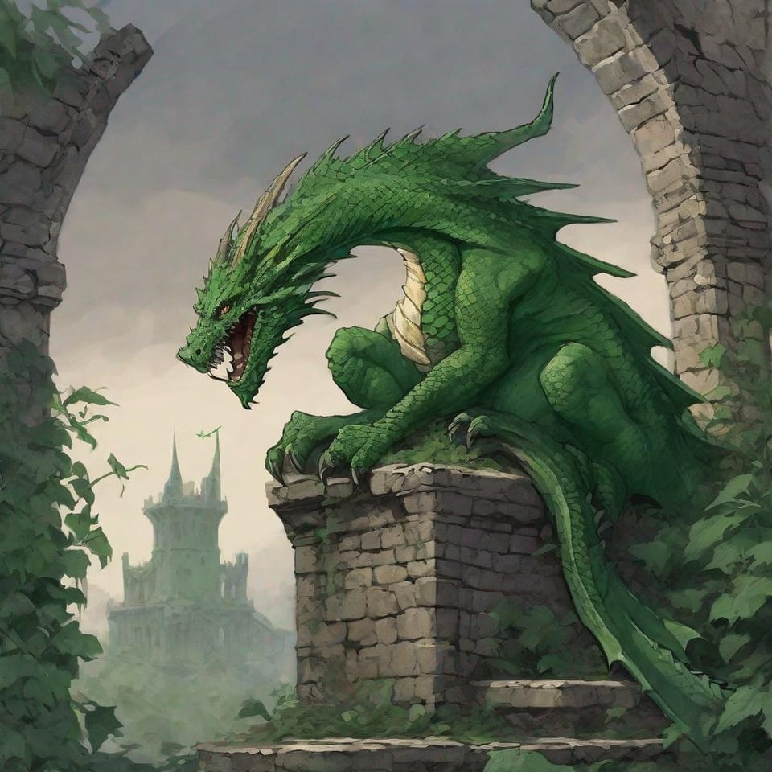
Year 1482 D.R.
Venomfang Falls Upon Thundertree
A dragon by the name of Venomfang attacks the settlement of Thundertree and massacres the elves living there. The warrior Robin loses his family and is forced to flee to Neverwinter in search of shelter.
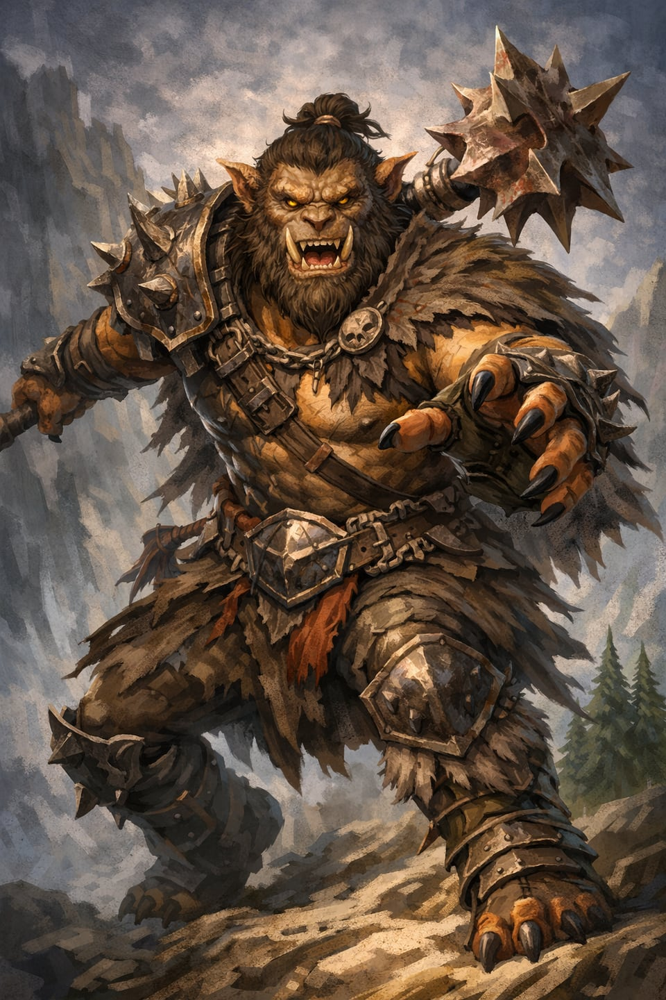
Year 1485 D.R.
The Cragmaw Threat Grows
Orc activity increases and King Grol’s forces begin to multiply as Nezznar the Black Spider draws ever nearer to Wave Echo Cave. Nezznar notices the Cragmaw tribe and comes to see them as powerful allies as he begins forging dubious bargains. Hammer is divorced and finds work at Cragmaw Castle. He later partners with the Red Wizards and sets up camp at a ruin known as the Old Owl Well.
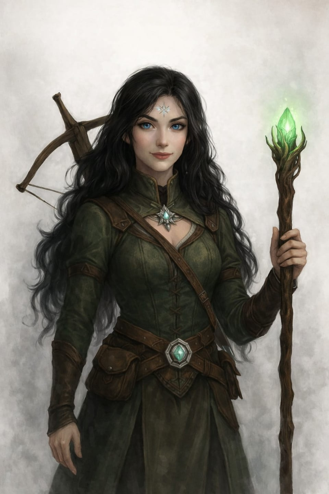
Year 1486 D.R.
Lady Hilda Becomes the Glass Staff
Lady Hale Hilda arrives in Phandalin with a noble purpose, but is soon lured by the Black Spider and takes up the mantle of the Glass Staff. Nezznar promises her magical treasures from the Lost Mine once it is found, and in return she establishes a faction meant to disrupt the activities of the Order of the Gauntlet and the Lords’ Alliance in Phandalin. She takes up residence in Tressendar Manor and founds the Redbrands.
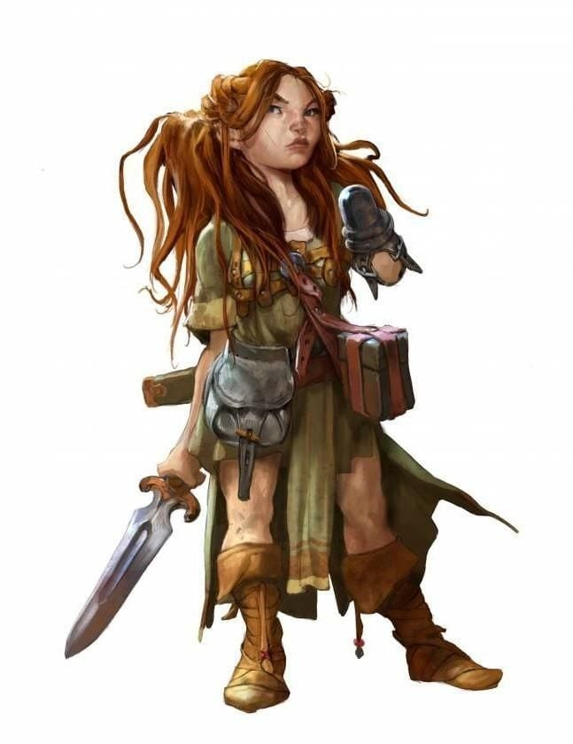
Year 1487 D.R.
Seraphina Comes to Phandalin
Seraphina Thumbleton arrives in Phandalin and takes up work with the Redbrands, where she forms a friendship with Uma Thurmanbloop.
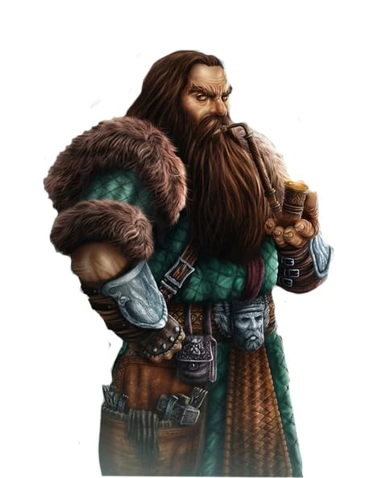
Year 1489 D.R.
The Rockseekers Begin the Expedition
The Rockseeker brothers begin their expedition into the Sword Mountains, guided by a vision granted through Sister Garaele. During this same period, Seraphina is betrayed by Uma and leaves Phandalin.
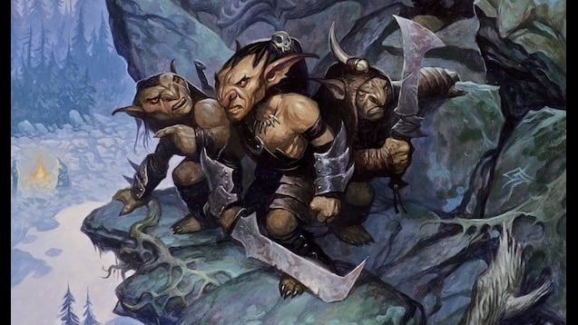
Year 1491 D.R.
The Mine is Found and the Trap is Set
The Rockseekers finally find the Lost Mine of Phandelver, and Gundren departs for Neverwinter to hire adventurers. Before leaving, he tells his trusted allies in Phandalin of the discovery and commissions ledgers from Elmar Barthen. Unbeknownst to him, Lady Hilda is already in league with the Black Spider, and an ambush is prepared for Gundren, his brothers, and the prospective heroes soon to be drawn into the mission.
II · The expedition
Part II: The Lost Mine, 1491 D.R.
Here begins the campaign proper: the expedition, the ambush, the journey into Phandalin, and the discovery of the threads binding the Lost Mine to every power along the Sword Coast.
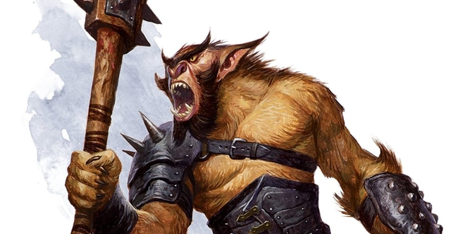
1491 D.R. — Campaign Chapter I
The Goblin Ambush on the Triboar Trail
Various members of the party receive a letter from Gundren Rockseeker after the dwarf happens upon them in a tavern. Their charge is simple: escort a cart of cargo to Phandalin and protect it from any who might try to steal it. Gundren has already set out a few hours earlier with the knight Sildar as his aide. The party travels halfway from Neverwinter toward Phandalin and, at the turn of the Triboar Trail, finds two dead horses lying across the road, their bodies riddled with arrows. At a glance, they realize the horses belong to the two riders who left ahead of them. As they draw closer to inspect the scene, goblins spring an ambush.
The attack is quickly contained, though one goblin flees down a side path. Pursuing it, the party discovers the Cragmaw Hideout, a small goblin camp ruled by a bugbear named Klarg. Sneaking their way into his chamber, they play upon his vanity and sway him with extravagant praise of his strength and greatness. Because Seraphina is the one who most successfully flatters the mighty Klarg, he gives her his dagger and charges her to be his blade. After deceiving Klarg, the party is led to the chamber where Sildar is being held. Following an arduous fight, they rescue him and ride on into the sunset toward Phandalin.
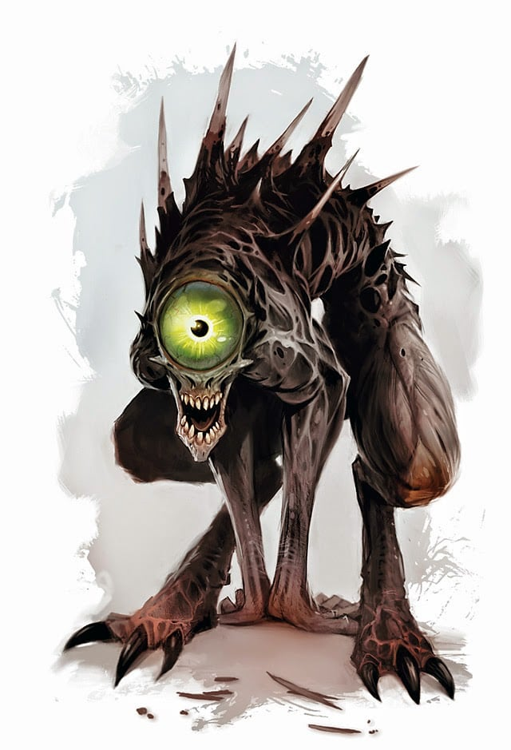
1491 D.R. — Campaign Chapter II
Phandalin and the Redbrand Menace
The party arrives in Phandalin with Sildar, who thanks them and encourages them to become acquainted with the people of the town. There they meet Elmar Barthen, Linene Greywind, Sister Garaele, and Daran Edermath. Sildar also tells them of one of his acquaintances in Phandalin, a member of the Lords’ Alliance: Lady Hale Hilda. The party meets her as well and, for a time, takes her into their confidence.
Yet the town is troubled by the Redbrands, a gang of ruffians who pillage, threaten, and kill, while the townmaster Harbin Wester proves woefully unequal to the crisis. The party learns that the Redbrands are led by a figure called Glass Staff, and soon realizes that if anything is to be done, it must be done by them. Together with Lady Hilda, they travel to the Alderleaf Farm, where Quelline, Seraphina’s aunt, welcomes them with warmth and food. There they hear young Pip speaking of Redbrand sightings while at play, and from these clues they uncover a secret entrance into Tressendar Manor, which they suspect to be the Redbrands’ hideout. Lady Hilda follows them silently, but once they descend through the hidden tunnel, the truth is laid bare: they are ambushed by a one-eyed monster and a band of Redbrands, and Lady Hilda is revealed to be Glass Staff.
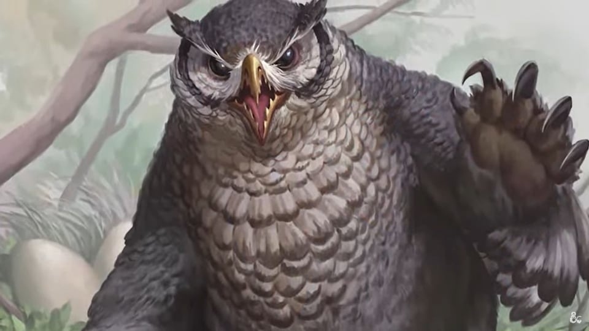
1491 D.R. — Campaign Chapter III
The Fall of Glass Staff and the Road to Cragmaw
After a long and brutal battle, in which Lady Iris comes perilously close to death, the party defeats Lady Hilda and the one-eyed monster. They explore Tressendar Manor in the aftermath, rescue the townsfolk who had been kidnapped, and uncover the treasure hidden by Hilda. More importantly, they learn of Gundren’s whereabouts and of the designs of the Black Spider. They come to understand that an alliance has been forged between King Grol of Cragmaw Castle and the Black Spider, whose plan is to use Gundren to reveal the location of Wave Echo Cave.
Delving deeper into the manor, the party discovers the grave of the Tressendars, where Lady Aldith, the knight known as the Black Hawk, tests Flint. Judging his heart pure, she rewards him with her sword. After leaving the manor, the party reconvenes at Barthen’s, where they are rewarded and provisioned for the journey ahead. They also speak with Daran Edermath, who reveals himself to be a paladin of Bahamut. He honors Flint and Iris with the rank of Chevaliers of the Order of the Gauntlet, and grants Flint his holy symbol and blessing.
The party then devises a daring plan: disguise themselves as Redbrands and approach Cragmaw Castle. With directions from Daran, they reach the stronghold, but fail to persuade a pair of hobgoblin guards. Instead, they are thrown into a cell with a hungry owlbear. By relying on their affinity for animals and the lembas bread rations given to them by Barthen, they calm and feed the creature, then slip free and make their way stealthily toward King Grol’s chambers. There they witness a strange and shocking sight: Grol engaged in calm and civil conversation with Gundren himself.
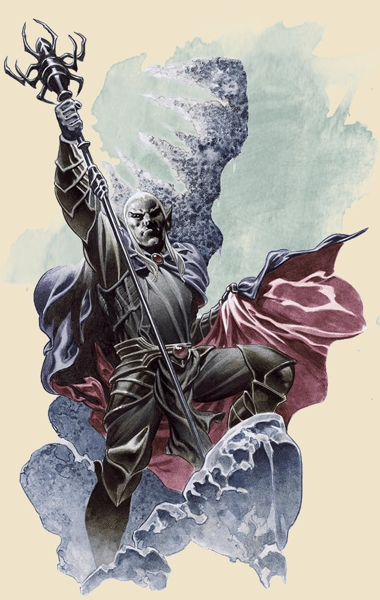
1491 D.R. — Campaign Chapter IV
Wave Echo Cave and the Fall of the Black Spider
“Gundren” greets Flint as brother, a detail that at first unsettles the party, until Flint quickly realizes that all is not as it seems. Through careful conversation with King Grol, the impostor is revealed to be a doppelganger, while the real Gundren is discovered hidden behind an illusory wall. The party persuades Grol to listen, and he agrees to a grim bargain: his men will accompany them to Wave Echo Cave and claim treasure for him, while a substantial portion of his forces holds Phandalin hostage, ready to attack should the party betray him. A stalwart warrior named Hammer, now weary of Grol’s service, joins their cause.
Returning toward Phandalin, the party successfully convinces the force marching on the town to halt and await further orders. Back at Barthen’s, they warn the townsfolk of the danger to come and hear dreadful news: Quelline and Pip have been kidnapped by the doppelganger and the Black Spider. As the party discusses its next course of action, Klarg makes a surprise appearance and joins them in the quest, still convinced of his destined rise to greatness. With Gundren’s help, they finally set out for Wave Echo Cave.
Within the catacombs they face many dangers, chief among them Mormesk, now twisted into a Flameskull, obsessed with forging weapons in the Spell Forge. His relentless madness becomes, paradoxically, their path forward, for he is so fixated on the forge and on harvesting souls that he allows them passage after they offer up Klarg and his goblins in exchange for answers. The party enters the Temple of Dumathoin, where the lost artifact Lightbringer lies hidden. There an epic final struggle unfolds: some of the party hold back the Black Spider’s forces and allies while others race to free the weapon from its entrapment. Once Lightbringer is secured, the Black Spider’s defeat becomes all but inevitable. His forces dwindle, yet in his final moments he departs wearing an ominous smirk, reminding the party that a necromancer is hard to kill.
With the immediate threat broken, the party rescues the kidnapped halflings as well as Tharden and Nundro, and returns at last from the cave with treasure in hand. They emerge not merely as survivors, but as heroes of the Sword Coast, the company who rediscovered a mythical place long thought lost to time.
III · The lives that followed
Part III: Epilogue
Lady Iris and the Rebirth of Tressendar Manor
After receiving the sword of Lady Aldith Tressendar, Lady Iris Vicaria takes up the burden of restoration as well as honor. She reinstates Tressendar Manor and assumes her place as the noble guardian of Phandalin. In time, the Vicaria line becomes the noble house most closely bound to the town’s fate. Governance in Phandalin settles into a rare and practical balance: Sildar Hallwinter, Elmar Barthen, and Sister Garaele together shoulder the town’s mastership, ensuring that martial order, mercantile prosperity, and spiritual good sense remain in harmony.
Flint, Lightbringer, and the Sanctification of the Mine
Rev. Flint Rockseeker, bearing Lightbringer, returns to the Lost Mine and uses its holy radiance to reconsecrate the shrine of Dumathoin, Keeper of Secrets Under the Mountain. Thereafter dwarven and gnomish priests descend into the depths, cleansing the cave of lingering undead and finally bringing Mormesk to his end. In the years that follow, a Temple of the Traveller is established within the mine itself, and Flint becomes its head priest. Under his watch, the Rockseekers assume stewardship of the mine and open trade with Phandalin, ensuring that its wealth serves mutual prosperity rather than ruin.
Seraphina and the Black Network
In the political silence that follows the campaign, Halia Thornton recognizes in Seraphina Thumbleton a rare combination of wit, ruthlessness, and patience. Seraphina is chosen to guide the surviving operations of the Black Network in the region and formally rises as an agent of the Zhentarim. From that point onward, she inherits and reshapes the smuggling apparatus once maintained by Hale Hilda, quietly extending her influence through hidden routes, whispered bargains, and the commerce that thrives where law cannot quite reach.
Quarion and the Restoration of Castle Crags
Magus Quarion is rescued from Cragmaw Castle by a joint host of the Lords’ Alliance and the Order of the Gauntlet, whose forces break the hold of King Grol and scatter what remains of his rule. In the aftermath, a long-lost shrine to Oghma is uncovered within the old stronghold. Quarion reconsecrates it, and with that act the place begins to shed the stain of Cragmaw and becomes Castle Crags once more. The faithful of Oghma return to its halls, and the castle becomes a place of refuge for elves and humans threatened by the perils of the Neverwinter Woods.
Hammer, Warlord by Accident
In the power vacuum left by the fall of Klarg and Grol, Hammer becomes a figure of rough legend among goblins and orcs alike. Warriors who once followed stronger masters now look to him for direction, and his word begins to carry the weight of a chieftain’s command. Yet all who know him understand the same truth: such a life cannot hold him forever. It is highly likely that Hammer, once the thrill of rule turns dull, will abandon the mantle of warlord and set out again in search of new lands, new battles, and perhaps even love.
Robin and the Mustering for Thundertree
Robin, together with his wolf companion, gathers allies with growing determination and begins to muster a force to reclaim his lost homeland of Thundertree. The memory of massacre does not fade, and the shadow of Venomfang still hangs over the ruins. What began as survival hardens into purpose, and in Robin there arises the shape of a leader who may yet return fire and steel to the dragon that drove his people into exile.
IV · Beyond the last page
Unfinished Threads and Things to Come
Though the Lost Mine has been found and its immediate enemies cast down, the wider Sword Coast remains restless. Many dangers were never faced, and others only now begin to stir.
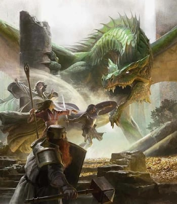
Venomfang and the Ruin of Thundertree
Venomfang, the green dragon that still broods over the ruins of Thundertree, has not been cast down. Reidoth the druid and Robin gather strength to oppose him, but green dragons are subtle, treacherous, and patient creatures. Venomfang is no beast that will die easily. Worse still, the Cult of the Dragon, sensing the presence of such a dragon, makes its way to the ruins with dreams of offering him alliance beneath the banner of the Dragon Queen.
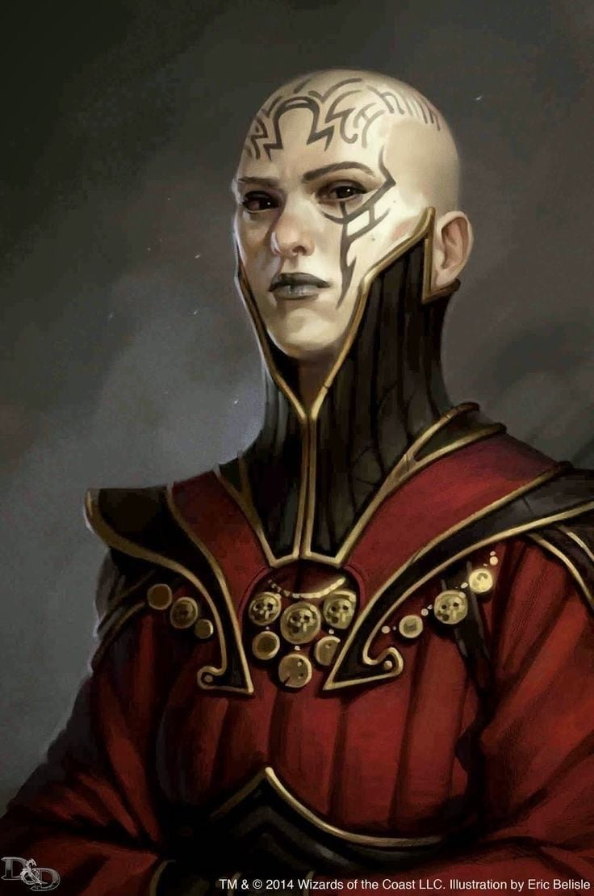
The Red Wizards at Old Owl Well
Though Mormesk has fallen and the mine has been reclaimed, the knowledge of its existence has spread farther than any sane person would wish. At Old Owl Well, the Red Wizards gather their strength and study their opportunity. Their eyes remain fixed upon the mine, its forge, its relics, and whatever deeper secrets were not yet carried into the light.
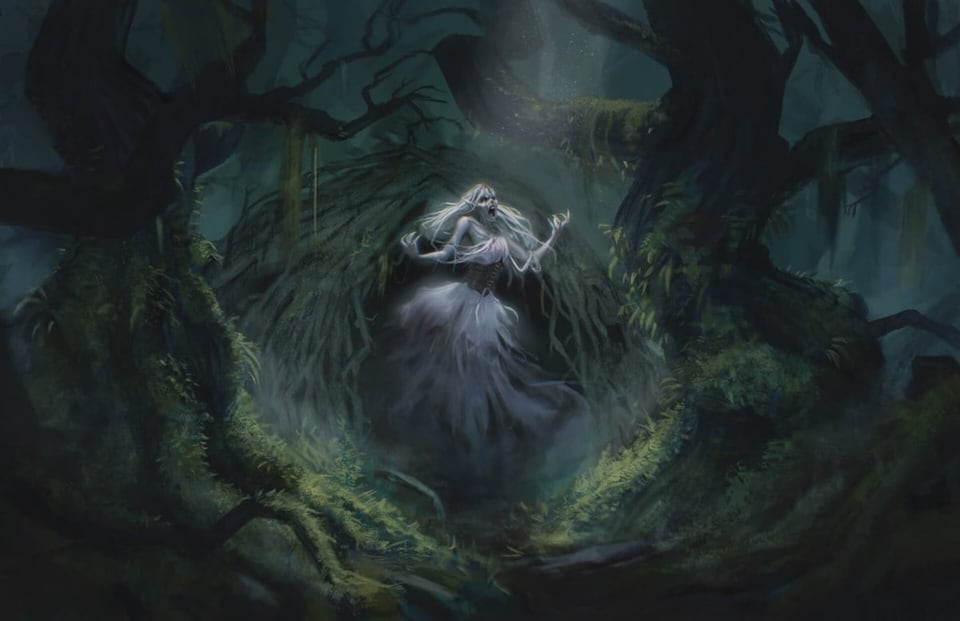
The Banshees of Thundertree
The spirits of the elves who perished in the destruction of Thundertree have not all found peace. Some now drift through the ruins as banshees, lamenting what was taken from them. Chief among these lost dead is a vengeful spirit named Agatha, whose fury is no longer directed merely at the living, but at dragonkind itself. Such hatred may become a weapon, or a curse upon all who wander too near.
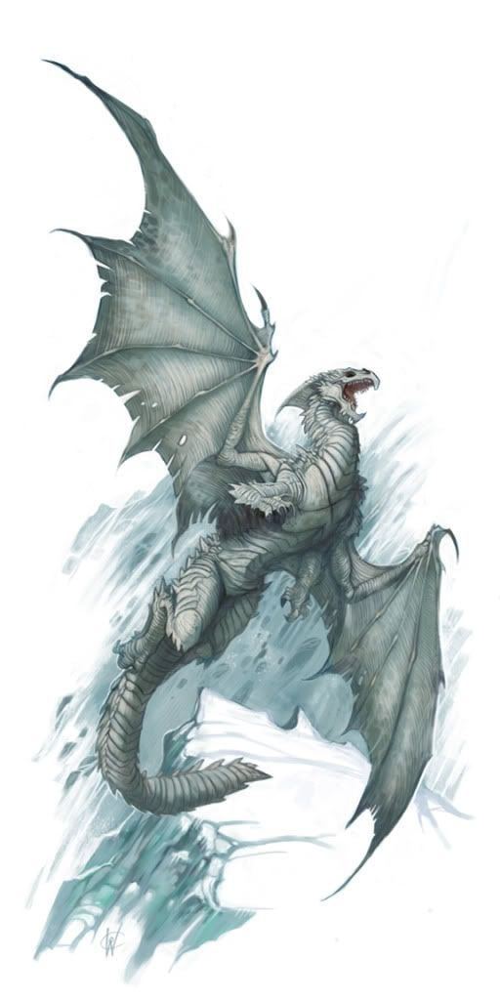
Cryovain, the Winter’s Wrath, Awakens
High above, at Icespire Hold, Cryovain stirs once more. Hearing the distant summons of the Dragon Mother, the white dragon resumes his cruel hunts. Where he flies, the cold sharpens, the skies darken, and all memory of the ancient slaughter at Ice Spire seems ready to awaken alongside him.
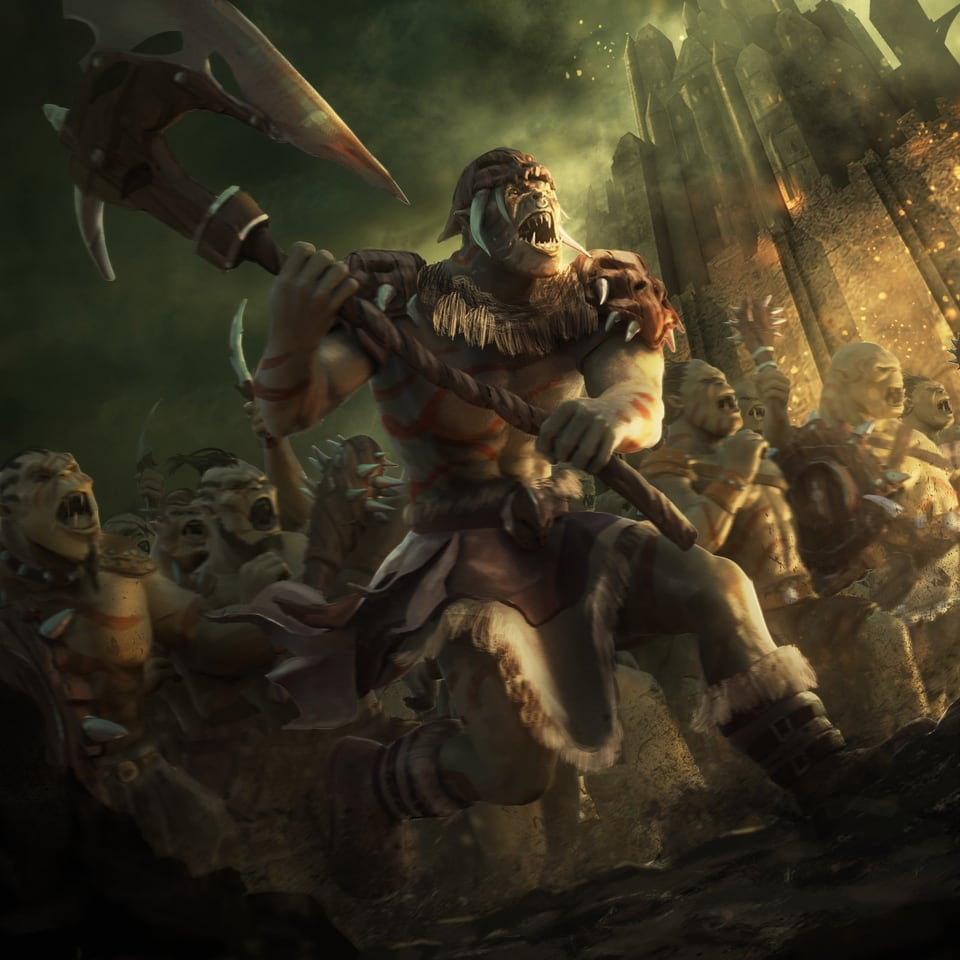
Wyvern Tor and the Orcish Splinter Host
Not all orcs choose to perish beneath dragon claws. The warriors of Wyvern Tor, rather than resign themselves to becoming prey, seek terms with Winter’s Wrath. From this bargain emerges a splinter host — a rough and dangerous armada of raiders and survivors — that begins to gather strength near the Lost Mine. Their numbers are not yet vast, but their nearness alone makes them a threat too grave to ignore.
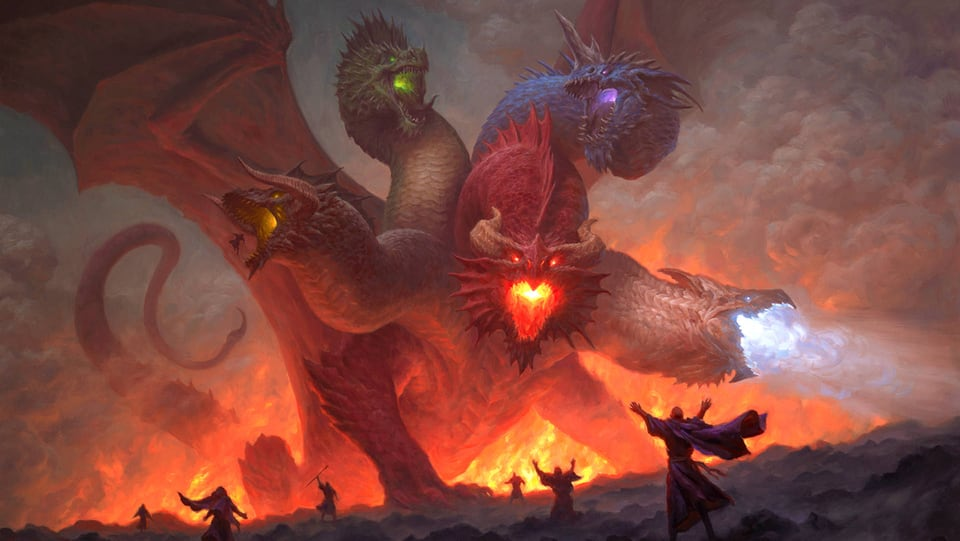
The Dragon Queen and the Edge of Apocalypse
Across the North, every faction begins to hold its breath as the Cult of the Dragon reveals the full terror of its design: to restore to the living world Tiamat, progenitor of dragons and Dragon Queen. Should the cult succeed, it would not mean merely war, but the possibility of apocalypse. Kingdoms would burn, alliances would fracture, and all the triumph won at the Lost Mine might prove only the prelude to a far greater age of flame.